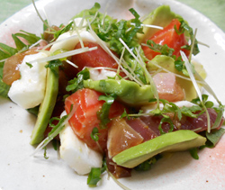

アボカドと刺身3種の
ワサビ醤油和え
ワサビ醤油和え
- 調理時間：30 分
- （一人当たり）
- カロリー：305kcal
- たんぱく質：27.6g
- 脂質：13.7g
- 炭水化物：18.0g
- 塩分：1.2g


＜２人分＞
- 刺身3種（今回はマグロ、
サーモン、ハマチ） - 合わせて200g
- アボカド
- 1/4個
- 大和芋
- 100g
- カイワレ大根
(2～3㎝幅に切る） - 1/2パック
- 大葉
(千切りにして水にさらす） - 2～3枚
- 青ネギ(小口切り）
- 3～4本
- しょうゆ
- 大さじ1
- ワサビ
- 適量


- 刺身は各々、一口大に切り分ける。
- 1. アボカドはそぎ切りにしてレモン汁(分量外）をかける。
2. 大和芋は皮をむき、一口大に切り、レモン汁（分量外）をかける。
3. カイワレ大根は２～３㎝幅に切る。大葉は千切り、青ネギは小口切りにする。 - ボウルに①～②の材料を入れ、ワサビ醤油を回しかけて軽く和える。
アボカドと刺身3種のワサビ醤油和え
先人が伝えた食べ合わせの術は不思議と理にかなっていることが多いものです。
例えば、美容にもよいイメージの魚ですが、魚を食べる時は大根やレモン、シソ等、抗酸化作用のある食材や、アボカドや山芋などの消化酵素として働く食材を添えることが大事。
その理由は、魚は酸化が早いため。食べ合わせのコツとして、抗酸化力の高いVC、VE、β-カロテンの多い食材と一緒に食べることで脂質の酸化を押さえることができますし、消化酵素のある食材と合わせることで、消化吸収を促します。少しの手間が大きな役割を果たしているようです。